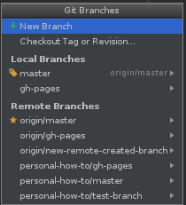

How to create branches within a repository
Creating branches within a repository has many uses from allowing multiple developers to work on different parts of the code at the same time to being a part of a deployment strategy. For more information about the usefulness of branches please see the Workflow Strategy page. This page will show the different ways you can create a branch in a repository.
Via GitHub
Via IntelliJ IDE
-
Go to VCS -> Git -> Branches..

-
The Git Branches pop-up menu will be displayed and click the +New Branch option. 
-
In the Create New Branch dialog name your branch and optionally check the box next to Checkout branch. (see our How to on Checkout Branch to learn more about checking out branches)